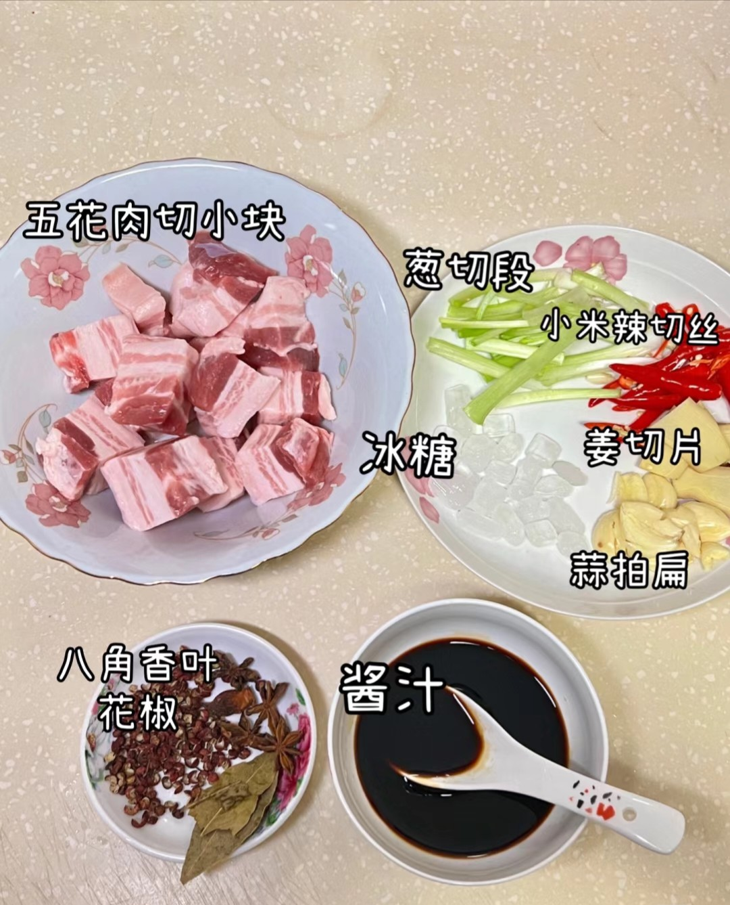
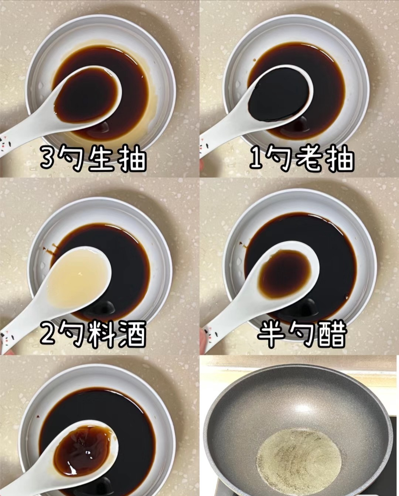
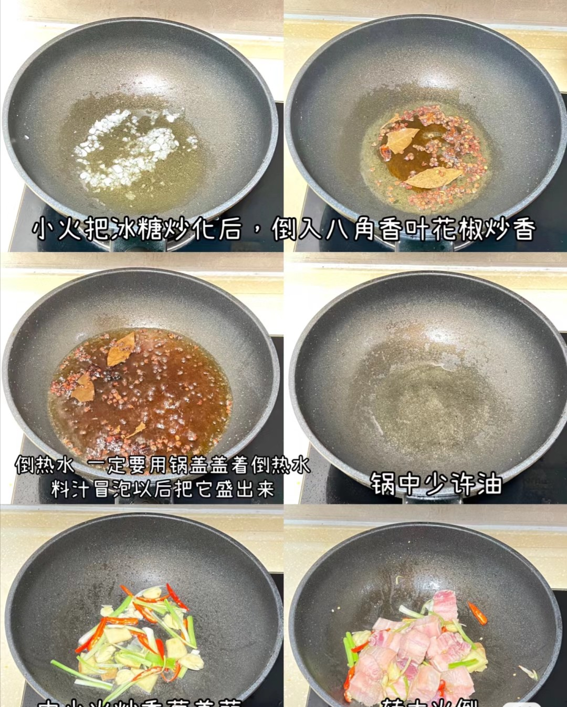
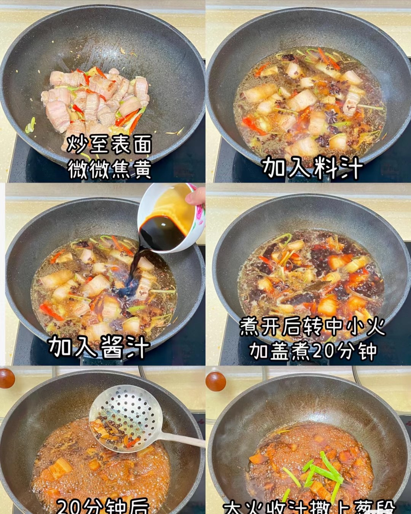
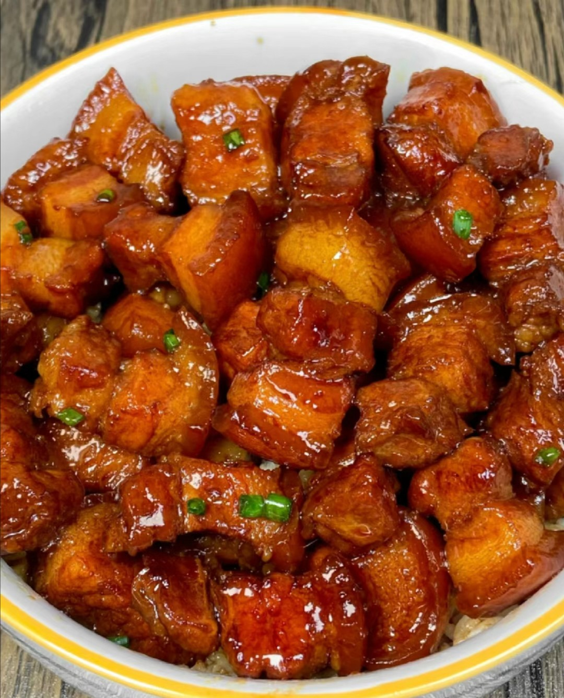

1.备好材料:买一块完美的五花肉是这个菜的关键（假的）葱段、小米辣丝、冰糖、姜片、蒜瓣、花椒（必须）八角香叶

2.老规矩准备料汁，三勺生抽、一勺老抽、两勺料酒、半勺醋、半勺耗油

3.过热倒油，油温度上去后小火把冰糖炒化然后加入八角花椒香叶炒香，加入热水，煮开后到处备用

4.锅中加入少许油（五花肉会出油）炒香葱段姜蒜小米辣，倒入五花肉炒至微微焦黄后倒入上一步的汤，然后倒入上上部调好的料汁，煮开后转小火加盖焖煮20分钟，之后开盖捞出香料残渣，大火收汁后撒上葱段和小米辣
做菜是用心享受生活的一个过程，每个人都会从开始的不太会做到比较会做，不必过多的去刻意要求自己，但是却一定要好好的享受这一过程，爱人做好了菜要多给与鼓励，同时善意的提出自己的意见，毕竟做菜很辛苦，但是辛苦也得有成果对吧

下一个在这->椒盐土豆
上一个在这->麻婆豆腐